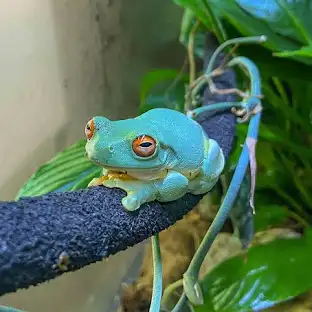
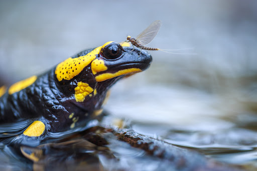
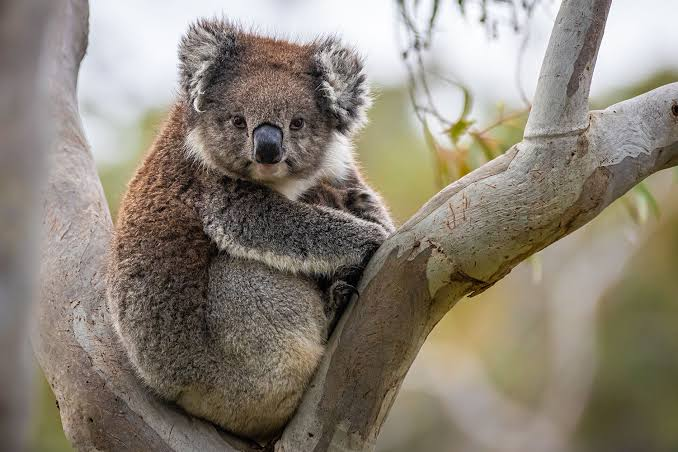
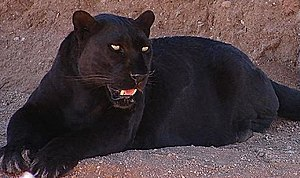
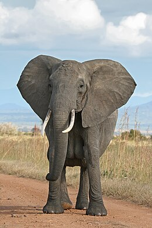
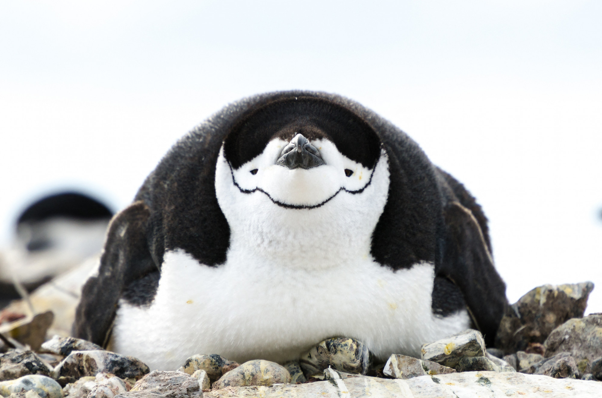
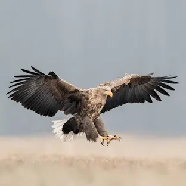
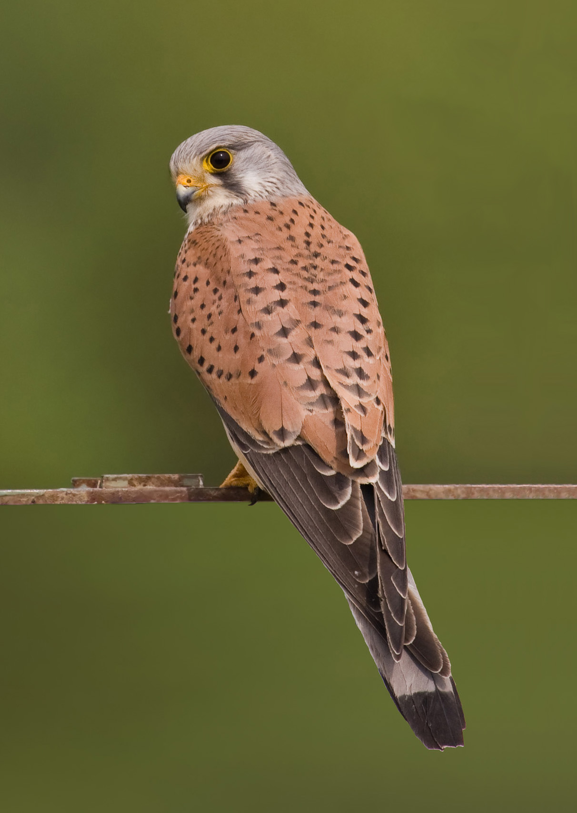
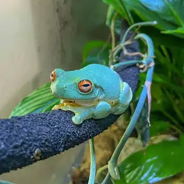
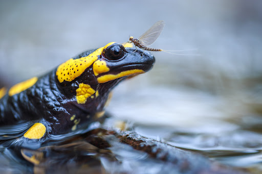

Béka
A varangyfélék is békafélék, mely ehy kétéltű állat
Mexikói axolotl
Gyakori kétéltű háziállat

Foltos szalamandra
Európában jól ismert, védett kétéltű állat
Az állatok világa roppant sokszínű, illetve folyamatos felfedezésekre ad lehetőséget
Ausztráliában élő, erszényes, nvényevő emlős állat
veszélyeztetett ragadozó emlős állat
Afrikában őshonos ormányos emlősállat
Leginkább hideg éghajlaton élő szárnyas állat
Vágómadár-alakúak osztályába tartozó szárnyas állat
A sólyomalakú madarak osztályába tartozó szárnyas állat
A varangyfélék is békafélék, mely ehy kétéltű állat
Gyakori kétéltű háziállat
Európában jól ismert, védett kétéltű állat
